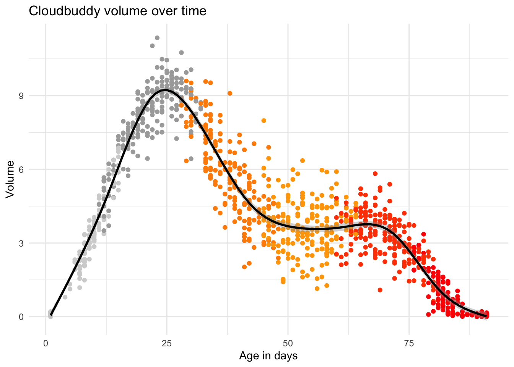
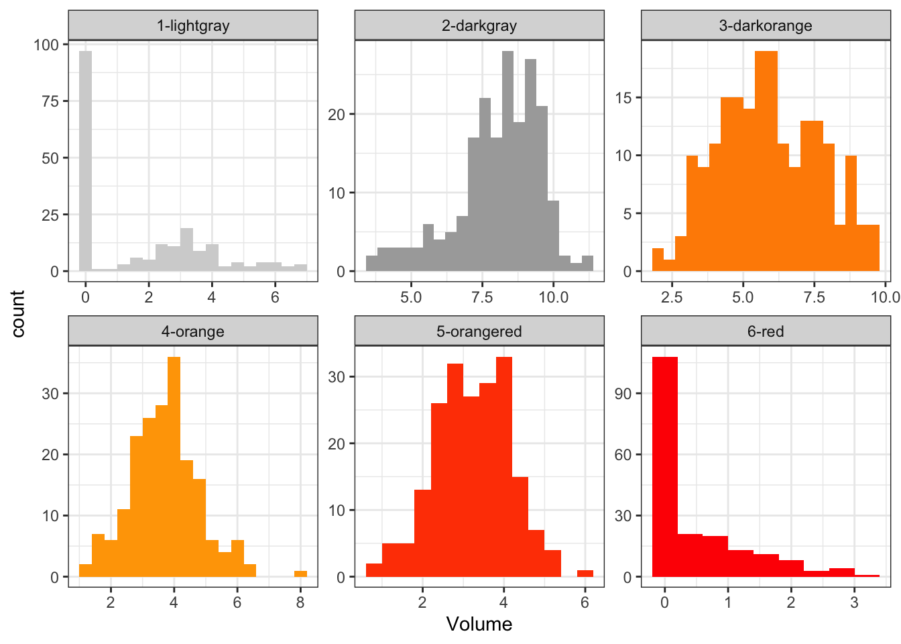
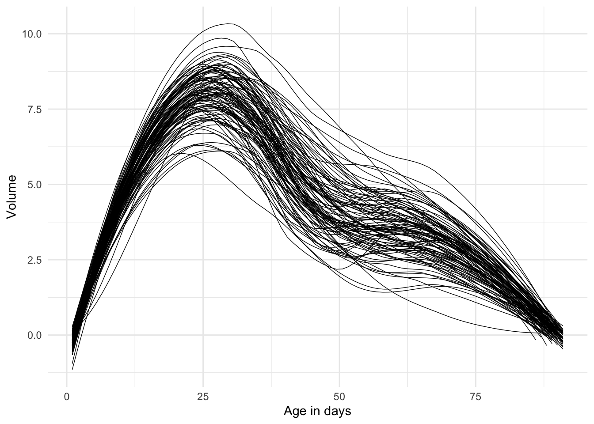

Cloudbuddies
The text below comes (mostly) from the Marcus R Training course website - https://haswal.github.io/MaRcus/index.html:
We will have the privilege to work with data on a newly discovered being: Cloudbuddies. Cloudbuddies were first discovered in 2013 and for a decade they have been a source of confusion and frustration in the scientific community, due to, among other things, the fact that they seem to be a living, breathing, inexplicable mix of Altocumulus clouds and Cloudberries. Not much is known about Cloudbuddies and currently data is rather limited, but over the course of the next months more and more information will be collected and shared with us for analysis.
The data
We can see that the dataset contains nrow(cb_data) observations with ncol(cb_data) variables. You can inspect the dataset interactively below:
{r cb_data_interactive # make this table interactive cb_data
Visualization
The data can be further explored via plots. Use the tabs below to visualize how cloudbuddies change over time.
Volume over time
ggplot(data = cb_data,
mapping = aes(x = Age_in_days,
y = Volume)) +
geom_point(aes(color = `Phase (color)`),
show.legend = FALSE) +
geom_smooth(color = "black") +
scale_color_manual(values = c("1-lightgray" = "lightgray",
"2-darkgray" = "darkgray",
"3-darkorange" = "darkorange",
"4-orange" = "orange",
"5-orangered" = "orangered",
"6-red" = "red")) +
theme_minimal() +
labs(x = "Age in days",
title = "Cloudbuddy volume over time")## `geom_smooth()` using method = 'gam' and formula = 'y ~ s(x, bs
## = "cs")'## Warning: Removed 10 rows containing non-finite values
## (`stat_smooth()`).## Warning: Removed 10 rows containing missing values
## (`geom_point()`).
Histograms by phase
ggplot(data = cb_data,
aes(x = Volume,
fill = `Phase (color)`)) +
geom_histogram(binwidth = 0.4,
show.legend = FALSE) +
facet_wrap(~`Phase (color)`,
scales = "free") +
theme_bw() +
scale_fill_manual(values = c("1-lightgray" = "lightgray",
"2-darkgray" = "darkgray",
"3-darkorange" = "darkorange",
"4-orange" = "orange",
"5-orangered" = "orangered",
"6-red" = "red"))## Warning: Removed 10 rows containing non-finite values
## (`stat_bin()`).
Age in days
ggplot(cb_data,
aes(x = Age_in_days,
y = Volume)) +
geom_smooth(aes(group = Cloudbuddy),
se = FALSE,
linewidth = 0.25,
color = "black") +
theme_minimal() +
labs(x = "Age in days")## `geom_smooth()` using method = 'loess' and formula = 'y ~ x'## Warning: Removed 10 rows containing non-finite values
## (`stat_smooth()`).## Warning in simpleLoess(y, x, w, span, degree = degree,
## parametric = parametric, : Chernobyl! trL>n 6
## Warning in simpleLoess(y, x, w, span, degree = degree,
## parametric = parametric, : Chernobyl! trL>n 6## Warning in sqrt(sum.squares/one.delta): NaNs produced## Warning in simpleLoess(y, x, w, span, degree = degree,
## parametric = parametric, : span too small. fewer data values
## than degrees of freedom.## Warning in simpleLoess(y, x, w, span, degree = degree,
## parametric = parametric, : pseudoinverse used at 0.56## Warning in simpleLoess(y, x, w, span, degree = degree,
## parametric = parametric, : neighborhood radius 45.44## Warning in simpleLoess(y, x, w, span, degree = degree,
## parametric = parametric, : reciprocal condition number 0## Warning in simpleLoess(y, x, w, span, degree = degree,
## parametric = parametric, : There are other near singularities as
## well. 1887## Warning in simpleLoess(y, x, w, span, degree = degree,
## parametric = parametric, : Chernobyl! trL>n 6
## Warning in simpleLoess(y, x, w, span, degree = degree,
## parametric = parametric, : Chernobyl! trL>n 6## Warning in sqrt(sum.squares/one.delta): NaNs produced## Warning in simpleLoess(y, x, w, span, degree = degree,
## parametric = parametric, : span too small. fewer data values
## than degrees of freedom.## Warning in simpleLoess(y, x, w, span, degree = degree,
## parametric = parametric, : pseudoinverse used at 0.56## Warning in simpleLoess(y, x, w, span, degree = degree,
## parametric = parametric, : neighborhood radius 60.44## Warning in simpleLoess(y, x, w, span, degree = degree,
## parametric = parametric, : reciprocal condition number 0## Warning in simpleLoess(y, x, w, span, degree = degree,
## parametric = parametric, : There are other near singularities as
## well. 3299.4
Elderly cloudbuddies
Future investigations may choose to focus on the elderly population of cloudbuddies (those 70 days or older). The table below shows the subset of cloudbuddies who meet this criterion.
cb_data %>%
filter(Age_in_days >= 70) %>%
arrange(desc(Age_in_days))## # A tibble: 301 × 6
## Cloudbuddy Observer Age_in_days Volume Weight `Phase (color)`
## <chr> <chr> <dbl> <dbl> <dbl> <chr>
## 1 cbID-003 raID-01 91 0.0840 0.267 6-red
## 2 cbID-004 raID-01 91 0.103 0.703 6-red
## 3 cbID-005 raID-01 91 0.0991 0.948 6-red
## 4 cbID-006 raID-01 91 0.0909 0.193 6-red
## 5 cbID-007 raID-01 91 0.0776 0.233 6-red
## 6 cbID-008 raID-01 91 0.0799 1.15 6-red
## 7 cbID-010 raID-01 91 0.106 0.881 6-red
## 8 cbID-013 raID-01 91 0.0736 0.124 6-red
## 9 cbID-015 raID-01 91 0.0578 0.458 6-red
## 10 cbID-017 raID-02 91 0.112 0.418 6-red
## # ℹ 291 more rows# make this table interactive
cb_data %>%
filter(Age_in_days >= 70) %>%
arrange(desc(Age_in_days))## # A tibble: 301 × 6
## Cloudbuddy Observer Age_in_days Volume Weight `Phase (color)`
## <chr> <chr> <dbl> <dbl> <dbl> <chr>
## 1 cbID-003 raID-01 91 0.0840 0.267 6-red
## 2 cbID-004 raID-01 91 0.103 0.703 6-red
## 3 cbID-005 raID-01 91 0.0991 0.948 6-red
## 4 cbID-006 raID-01 91 0.0909 0.193 6-red
## 5 cbID-007 raID-01 91 0.0776 0.233 6-red
## 6 cbID-008 raID-01 91 0.0799 1.15 6-red
## 7 cbID-010 raID-01 91 0.106 0.881 6-red
## 8 cbID-013 raID-01 91 0.0736 0.124 6-red
## 9 cbID-015 raID-01 91 0.0578 0.458 6-red
## 10 cbID-017 raID-02 91 0.112 0.418 6-red
## # ℹ 291 more rowsAdditional exploration
# Put your new exploration in this chunk